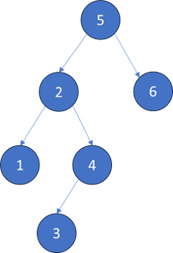

Algorithm - BFS演算法
BFS (Breath First Search)
廣度優先搜索（BFS）是一種圖形搜索算法，用於在圖形或樹中尋找節點之間的最短路徑或最短距離。該算法從一個起始節點開始，然後依次探索鄰近的節點，直到找到目標節點或遍歷完整個圖形。
BFS的主要特點是它以鄰近節點的廣度進行擴展，即先遍歷起始節點的所有鄰近節點，然後再遍歷這些鄰近節點的鄰近節點，以此類推。換句話說，BFS先擴展所有距離起始節點為1的節點，然後再擴展距離為2的節點，以此類推，直到找到目標節點或遍歷完整個圖形。
BFS通常使用一個 佇列 Queue 來記錄待處理的節點，並使用一個 標記數組或哈希表 來記錄已經訪問過的節點，以避免重複訪問。
BFS在許多應用中都有廣泛的應用，例如圖形搜索、迷宮解決、最短路徑問題等。它保證可以找到最短路徑，但在圖形較大或複雜的情況下，可能需要較多的時間和空間複雜度。
二元樹的最小值

static int minDepth(TreeNode root) {
if (root == null)
return 0;
Queue<TreeNode> q = new LinkedList<>();
q.offer(root);
int depth = 1;
while (!q.isEmpty()) {
int sz = q.size();
for (int i = 0; i < sz; i++) {
TreeNode cur = q.poll();
if(cur.left == null && cur.right ==null)
return depth;
if(cur.left !=null)
q.offer(cur.left);
if(cur.right !=null)
q.offer(cur.right);
}
depth++;
}
return depth;
}
public static void main(String[] args) {
TreeNode root = new TreeNode(5);
TreeNode _2 = new TreeNode(2);
TreeNode _1 = new TreeNode(1);
TreeNode _4 = new TreeNode(4);
TreeNode _3 = new TreeNode(3);
TreeNode _6 = new TreeNode(6);
TreeNode _7 = new TreeNode(7);
root.left = _2;
root.right = _6;
_2.left = _1;
_2.right = _4;
_4.left = _3;
_6.right = _7;
System.out.println(minDepth(root)); // 輸出：2
}
密碼鎖
public static String plusOne(String s, int j) {
char[] ch = s.toCharArray();
if (ch[j] == '9') {
ch[j] = '0';
} else {
ch[j] += 1;
}
return new String(ch);
}
public static String minusOne(String s, int j) {
char[] ch = s.toCharArray();
if (ch[j] == '0') {
ch[j] = '9';
} else {
ch[j] -= 1;
}
return new String(ch);
}
public static int openLock(String[] deadends, String target) {
Set<String> deads = new HashSet<>();
for (String dead : deadends)
deads.add(dead);
Set<String> visited = new HashSet<>();
Queue<String> q = new LinkedList<>();
q.offer("0000");
visited.add("0000");
int step = 0;
while (!q.isEmpty()) {
int size = q.size();
for (int i = 0; i < size; i++) {
String cur = q.poll();
visited.add(cur);
if (deads.contains(cur))
continue;
if (cur.equals(target))
return step;
for (int j = 0; j < 4; j++) {
String up = plusOne(cur, j);
String down = minusOne(cur, j);
if (!visited.contains(up))
q.offer(up);
if (!visited.contains(down))
q.offer(down);
}
}
step++;
}
return -1;
}
public static int minDepth(TreeNode root) {
if (root == null)
return 0;
Queue<TreeNode> q = new LinkedList<>();
q.offer(root);
int depth = 1;
while (!q.isEmpty()) {
int sz = q.size();
for (int i = 0; i < sz; i++) {
TreeNode cur = q.poll();
if (cur.left == null && cur.right == null)
return depth;
if (cur.left != null)
q.offer(cur.left);
if (cur.right != null)
q.offer(cur.right);
}
depth++;
}
return depth;
}